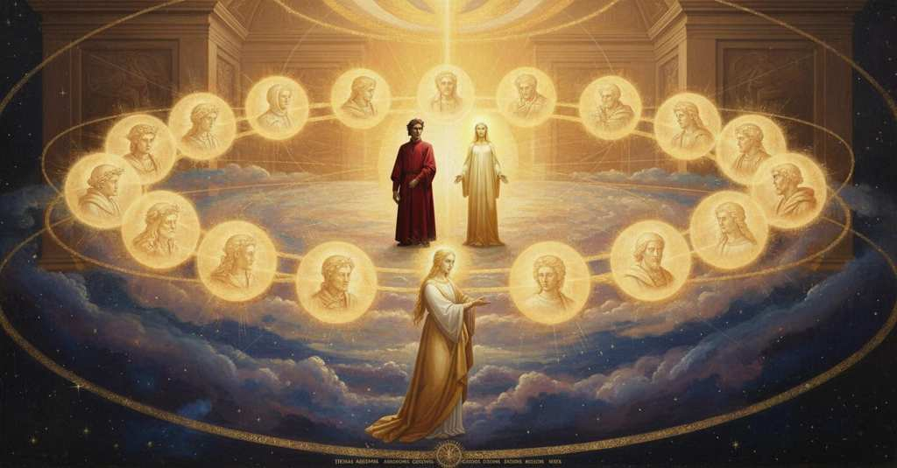

Paradiso — Canto 10

1
Guardando nel suo Figlio con l’Amore
Looking into his Son with the Love
御子を、愛と共に見つめながら、
2
che l’uno e l’altro etternalmente spira,
that the one and the other eternally breathe forth,
その愛は、一方と他方から永遠に発せられ、
3
lo primo e ineffabile Valore
the first and ineffable Worth
最初の、言葉にできぬ力は
4
quanto per mente e per loco si gira
all that revolves through mind and through space
心と空間を巡るものすべてを
5
con tant’ ordine fé, ch’esser non puote
made with such order, that one cannot be
かくも見事な秩序をもって創造した、ゆえにあり得ないのだ
6
sanza gustar di lui chi ciò rimira.
without tasting of him who gazes on it.
これを見つめる者が、神を味わわずにいることは。
7
Leva dunque, lettore, a l’alte rote
Lift then, reader, to the high wheels
さあ、読者よ、高き天輪へと
8
meco la vista, dritto a quella parte
with me your sight, straight to that part
私と共に視線を上げよ、一方の動きと他方の動きが
9
dove l’un moto e l’altro si percuote;
where the one motion and the other strike each other;
ぶつかるその場所へとまっすぐに。
10
e lì comincia a vagheggiar ne l’arte
and there begin to delight in the art
そしてそこで、その術を愛で始めよ
11
di quel maestro che dentro a sé l’ama,
of that master who so loves it in himself,
それを自らの内に愛する師の、
12
tanto che mai da lei l’occhio non parte.
that his eye never departs from it.
決してそこから目を離さぬほどの師の術を。
13
Vedi come da indi si dirama
See how from there branches off
見よ、そこからいかに分かれ出るかを
14
l’oblico cerchio che i pianeti porta,
the oblique circle that bears the planets,
惑星を運ぶ斜めの円が、
15
per sodisfare al mondo che li chiama.
to satisfy the world that calls to them.
それらを呼ぶ世界を満足させるために。
16
Che se la strada lor non fosse torta,
For if their path were not slanted,
なぜなら、もしその道が傾いていなかったならば、
17
molta virtù nel ciel sarebbe in vano,
much virtue in the heaven would be in vain,
天における多くの力は虚しいものとなり、
18
e quasi ogne potenza qua giù morta;
and almost every potency down here dead;
地上のほとんど全ての力は死んでしまうだろう。
19
e se dal dritto più o men lontano
and if from the straight more or less distant
そして、もし直道からの離れが、多すぎたり少なすぎたりすれば、
20
fosse ’l partire, assai sarebbe manco
were the departure, much would be lacking
大いに損なわれるだろう
21
e giù e sù de l’ordine mondano.
both below and above in the worldly order.
地上の秩序も天上の秩序も。
22
Or ti riman, lettor, sovra ’l tuo banco,
Now remain, reader, upon your bench,
さあ、読者よ、汝の席に留まれ、
23
dietro pensando a ciò che si preliba,
thinking back on this which is foretasted,
この前味について考えながら、
24
s’esser vuoi lieto assai prima che stanco.
if you wish to be joyful long before you are weary.
疲れるよりずっと前に大いに喜びたいのであれば。
25
Messo t’ho innanzi: omai per te ti ciba;
I have set before you: now feed yourself by yourself;
私は汝の前に置いた、今や自らで食せ。
26
ché a sé torce tutta la mia cura
for to itself twists all my care
なぜなら、私の全ての注意を自らへと向けるからだ
27
quella materia ond’ io son fatto scriba.
that matter of which I am made the scribe.
私が書記となったその題材が。
28
Lo ministro maggior de la natura,
The greatest minister of nature,
自然の大いなる僕は、
29
che del valor del ciel lo mondo imprenta
who with the power of heaven imprints the world
天の力をもってこの世に刻印し、
30
e col suo lume il tempo ne misura,
and with its light measures time for us,
その光で我らの時を計るもの（太陽）は、
31
con quella parte che sù si rammenta
with that part which is mentioned above
上に述べられたその部分と結びつき、
32
congiunto, si girava per le spire
conjoined, was circling through the spirals
そこでは常により速く姿を現す
33
in che più tosto ognora s’appresenta;
in which it ever presents itself more swiftly;
螺旋の道を巡っていた。
34
e io era con lui; ma del salire
and I was with it; but of the ascent
そして私は彼と共にいた。だが昇ることには
35
non m’accors’ io, se non com’ uom s’accorge,
I was not aware, except as a man is aware,
私は気づかなかった、人が気づくように、
36
anzi ’l primo pensier, del suo venire.
before the first thought, of its coming.
いや、最初の思考が浮かぶよりも前に、その到来を。
37
È Bëatrice quella che sì scorge
It is Beatrice who so guides
かくも導くのはベアトリーチェであり、
38
di bene in meglio, sì subitamente
from good to better, so suddenly
善きからより善きへと、かくも速やかに、
39
che l’atto suo per tempo non si sporge.
that her action does not extend through time.
その行いは時を費やさぬほどに。
40
Quant’ esser convenia da sé lucente
How brilliant in itself it had to be,
それ自らがどれほど輝いていたことか、
41
quel ch’era dentro al sol dov’ io entra’mi,
that which was within the sun where I entered,
私が入った太陽の内にあったものは、
42
non per color, ma per lume parvente!
not by color, but by light apparent!
色によってではなく、光によって現れる！
43
Perch’ io lo ’ngegno e l’arte e l’uso chiami,
Though I may call on genius and art and practice,
私が天分と術と経験を呼び寄せても、
44
sì nol direi che mai s’imaginasse;
I could not so tell it that it could ever be imagined;
決して想像できぬほどに語ることはできまい。
45
ma creder puossi e di veder si brami.
but it can be believed, and one may long to see it.
だが信じることはでき、見ることを渇望できよう。
46
E se le fantasie nostre son basse
And if our fantasies are low
そして我らの想像力がかくも低いなら、
47
a tanta altezza, non è maraviglia;
for such a height, it is no wonder;
かほどの高みに対して、それは驚きではない。
48
ché sopra ’l sol non fu occhio ch’andasse.
for above the sun no eye ever went.
なぜなら太陽を超えて進んだ目はなかったのだから。
49
Tal era quivi la quarta famiglia
Such there was the fourth family
そのようなのが、ここの第四の家族であった、
50
de l’alto Padre, che sempre la sazia,
of the high Father, who always sates it,
至高の父の。父は常に彼らを満足させ、
51
mostrando come spira e come figlia.
showing how He breathes forth and how He begets.
いかにして息吹を送り、いかにして子をもうけるかを示される。
52
E Bëatrice cominciò: «Ringrazia,
And Beatrice began: "Give thanks,
そしてベアトリーチェは始めた。「感謝なさい、
53
ringrazia il Sol de li angeli, ch’a questo
give thanks to the Sun of the angels, who to this
天使たちの太陽に感謝なさい。その方がこの
54
sensibil t’ha levato per sua grazia».
sensible one has raised you by His grace."
感覚できる（太陽）へ、その恩寵によってあなたを上げたのだから」。
55
Cor di mortal non fu mai sì digesto
The heart of a mortal was never so disposed
死すべき者の心は、かつてかくも準備ができていなかった、
56
a divozione e a rendersi a Dio
to devotion and to rendering itself to God
信心へと、そして神に身を捧げることへと、
57
con tutto ’l suo gradir cotanto presto,
with all its will so quickly,
自らの意志のすべてをもって、かくも速やかに、
58
come a quelle parole mi fec’ io;
as at those words I made myself do;
その言葉を受けて私がそうしたように。
59
e sì tutto ’l mio amore in lui si mise,
and so all my love was set on Him,
そして私の愛のすべてがその方に注がれたので、
60
che Bëatrice eclissò ne l’oblio.
that Beatrice was eclipsed in oblivion.
ベアトリーチェが忘却の中に食されたほどに。
61
Non le dispiacque; ma sì se ne rise,
It did not displease her; but she so smiled at it,
彼女はそれを不快に思わなかった。むしろ微笑んだので、
62
che lo splendor de li occhi suoi ridenti
that the splendor of her smiling eyes
その笑みを湛えた両眼の輝きが、
63
mia mente unita in più cose divise.
divided my united mind among more things.
一つに集中した私の心を、多くの事柄へと分けた。
64
Io vidi più folgór vivi e vincenti
I saw many living and winning splendors
私は見た、多くの生ける勝ち誇る輝きが
65
far di noi centro e di sé far corona,
make of us a center and of themselves a crown,
我々を中心に据え、自ら冠をなすのを、
66
più dolci in voce che in vista lucenti:
sweeter in voice than in appearance shining:
その姿の輝きよりも声の甘美さにおいて勝り、
67
così cinger la figlia di Latona
thus to encircle the daughter of Latona
このようにラトナの娘が囲まれるのを
68
vedem talvolta, quando l’aere è pregno,
we sometimes see, when the air is laden,
我々は時折見る、大気が満ちている時に、
69
sì che ritenga il fil che fa la zona.
so that it retains the thread that makes the halo.
その暈をなす糸を留めるほどに。
70
Ne la corte del cielo, ond’ io rivegno,
In the court of Heaven, whence I return,
私が帰還しつつある天の宮廷には、
71
si trovan molte gioie care e belle
are found many dear and beautiful jewels
多くの貴く美しい喜びが見出される、
72
tanto che non si posson trar del regno;
so that they cannot be brought from the kingdom;
王国から持ち出すことはできぬほどに。
73
e ’l canto di quei lumi era di quelle;
and the song of those lights was one of those;
そして、かの光たちの歌もその一つであった。
74
chi non s’impenna sì che là sù voli,
he who does not fledge himself to fly up there,
翼を生やしてかの高みへ飛ばぬ者は、
75
dal muto aspetti quindi le novelle.
let him await news then from the mute.
唖者からその知らせを待つがよい。
76
Poi, sì cantando, quelli ardenti soli
Then, thus singing, those burning suns
やがて、歌いつつ、かの燃える太陽たちは
77
si fuor girati intorno a noi tre volte,
had circled around us three times,
我々の周りを三度巡った、
78
come stelle vicine a’ fermi poli,
like stars near to the fixed poles,
不動の極に近い星々のように、
79
donne mi parver, non da ballo sciolte,
ladies they seemed to me, not from a dance released,
私には、舞踏から解き放たれたのではなく、
80
ma che s’arrestin tacite, ascoltando
but who stop silently, listening
静かに立ち止まり、耳を澄ます貴婦人のようであった、
81
fin che le nove note hanno ricolte.
until they have gathered in the new notes.
新たな音符を受け止めるまで。
82
E dentro a l’un senti’ cominciar: «Quando
And from within one I heard begin: “When
そしてその内の一人が語り始めるのを聞いた。「その時
83
lo raggio de la grazia, onde s’accende
the ray of grace, by which is kindled
真の愛が燃え上がり、そして愛することによって成長する、その恩寵の光が、
84
verace amore e che poi cresce amando,
true love and which then grows by loving,
あなたの中で増し加わってかくも輝き、
85
multiplicato in te tanto resplende,
multiplied in you so shines,
あなたをこの階梯の上へと導いている、
86
che ti conduce su per quella scala
that it leads you up that stair
そこからは再び昇らずして下りる者はいない。
87
u’ sanza risalir nessun discende;
which without re-climbing no one descends;
あなたの渇きのために、自らの瓶の酒を
88
qual ti negasse il vin de la sua fiala
who would deny you the wine of his vial
拒む者がいたなら、それは自由ではないだろう、
89
per la tua sete, in libertà non fora
for your thirst, would not be free
海へと下らない水がそうであるように。
90
se non com’ acqua ch’al mar non si cala.
except as water that does not fall to the sea.
あなたは知りたいのだろう、どのような草花で飾られているかを、
91
Tu vuo’ saper di quai piante s’infiora
You wish to know with what plants is enflowered
この花輪が、それは周りで愛でている
92
questa ghirlanda che ’ntorno vagheggia
this garland that lovingly circles
天においてあなたを力づける美しい貴婦人を。
93
la bella donna ch’al ciel t’avvalora.
the fair lady who strengthens you for heaven.
私は聖なる群れの小羊の一人であった、
94
Io fui de li agni de la santa greggia
I was of the lambs of the holy flock
ドミニコが道に沿って導くところの、
95
che Domenico mena per cammino
that Dominic leads along a path
もし虚栄に走らなければ、そこではよく肥える。
96
u’ ben s’impingua se non si vaneggia.
where one fattens well if one does not stray.
私の右に最も近いこの者は、
97
Questi che m’è a destra più vicino,
This one who is nearest me on the right,
我が兄弟にして師であり、彼はケルンのアルベルトゥス、
98
frate e maestro fummi, ed esso Alberto
was brother and master to me, and he is Albert
そして私はアクィナス家のトマスである。
99
è di Cologna, e io Thomas d’Aquino.
of Cologne, and I am Thomas Aquinas.
もし他の者たち全員について確かめたいのであれば、
100
Se sì di tutti li altri esser vuo’ certo,
If thus of all the others you wish to be certain,
私の言葉の後を、顔を向けてついてきなさい、
101
di retro al mio parlar ten vien col viso
behind my speech come with your gaze,
この祝福された花輪の上を巡りながら。
102
girando su per lo beato serto.
turning up along the blessed wreath.
あのもう一つの輝きは、その微笑みから発せられている
103
Quell’ altro fiammeggiare esce del riso
That other flaming issues from the smile
グラティアヌスの、彼は二つの法廷を助けたので、
104
di Grazïan, che l’uno e l’altro foro
of Gratian, who helped the one and the other forum
天国で喜ばれている。
105
aiutò sì che piace in paradiso.
so that it pleases in paradise.
次に我らの合唱隊を飾る者は、
106
L’altro ch’appresso addorna il nostro coro,
The other who next adorns our choir,
あのピエトロであり、彼は貧しい寡婦と共に
107
quel Pietro fu che con la poverella
was that Peter who with the poor widow
聖なる教会にその宝を捧げた。
108
offerse a Santa Chiesa suo tesoro.
offered his treasure to Holy Church.
第五の光は、我らのうちで最も美しく、
109
La quinta luce, ch’è tra noi più bella,
The fifth light, which is most beautiful among us,
そのような愛から息づいており、全世界が
110
spira di tale amor, che tutto ’l mondo
breathes such love, that all the world
下界でその知らせを知りたがっている。
111
là giù ne gola di saper novella:
below is greedy to have news of it:
その内には、かくも深い知恵が
112
entro v’è l’alta mente u’ sì profondo
within it is the lofty mind where such profound
置かれた高貴な精神がある、もし真実が真実ならば、
113
saver fu messo, che, se ’l vero è vero,
knowledge was placed, that, if the truth is true,
これほど多くを見た第二の者は現れなかった。
114
a veder tanto non surse il secondo.
a second has not risen to see so much.
次に見えるは、あの蝋燭の光、
115
Appresso vedi il lume di quel cero
Next you see the light of that taper
下界で肉体にあるうち、より深く見た者である
116
che giù in carne più a dentro vide
who below in the flesh saw most deeply
天使の本性とその務めを。
117
l’angelica natura e ’l ministero.
the angelic nature and its ministry.
もう一つの小さな光の中で微笑んでいるのは
118
Ne l’altra piccioletta luce ride
In the other little light smiles
キリスト教時代のあの擁護者、
119
quello avvocato de’ tempi cristiani
that advocate of Christian times
そのラテン語でアウグスティヌスは備えをした。
120
del cui latino Augustin si provide.
from whose Latin Augustine provided himself.
さあ、もしあなたが心の目を
121
Or se tu l’occhio de la mente trani
Now if you draw the eye of your mind
私の称賛の後に光から光へと引き寄せるなら、
122
di luce in luce dietro a le mie lode,
from light to light behind my praises,
すでに第八の者を渇望しているだろう。
123
già de l’ottava con sete rimani.
you already remain with thirst for the eighth.
あらゆる善を見ることで、その内で喜んでいるのは
124
Per vedere ogne ben dentro vi gode
From seeing every good, within it rejoices
あの聖なる魂、彼は偽りの世を
125
l’anima santa che ’l mondo fallace
the holy soul that makes the fallacious world
彼女についてよく聞く者に明らかにする。
126
fa manifesto a chi di lei ben ode.
manifest to whoever hears her well.
彼女がそこから追われた肉体は
127
Lo corpo ond’ ella fu cacciata giace
The body from which she was driven out lies
下界のチエルダウロに横たわる。そして彼女は殉教と
128
giuso in Cieldauro; ed essa da martiro
down in Cieldauro; and she from martyrdom
追放からこの平和へと来たのだ。
129
e da essilio venne a questa pace.
and from exile came to this peace.
さらに向こうに燃え盛る霊が輝くのを見よ
130
Vedi oltre fiammeggiar l’ardente spiro
See beyond, flaming, the ardent spirit
イシドールス、ベーダ、そしてリカルドゥスの、
131
d’Isidoro, di Beda e di Riccardo,
of Isidore, of Bede, and of Richard,
彼は観想において人以上であった。
132
che a considerar fu più che viro.
who in contemplation was more than a man.
あなたの視線がそこから私に戻ってくるこの者は、
133
Questi onde a me ritorna il tuo riguardo,
This one from whom your gaze returns to me,
ある霊の光であり、彼は重い思索のうちに
134
è ’l lume d’uno spirto che ’n pensieri
is the light of a spirit who in grave
死が来るのが遅いと思われた。
135
gravi a morir li parve venir tardo:
thoughts it seemed to him he was slow to die:
それはシジェールの永遠の光、
136
essa è la luce etterna di Sigieri,
it is the eternal light of Siger,
彼は藁通りで講義をしながら、
137
che, leggendo nel Vico de li Strami,
who, lecturing in the Street of Straw,
妬みを招く真理を三段論法で説いた」。
138
silogizzò invidïosi veri».
syllogized truths that brought him envy.”
57
139
Indi, come orologio che ne chiami
Then, like a clock that calls us
やがて、我らを呼ぶ時計のように、
140
ne l’ora che la sposa di Dio surge
at the hour when the bride of God rises
神の花嫁が立ち上がる時刻に
141
a mattinar lo sposo perché l’ami,
to sing matins to her spouse that he may love her,
花婿に愛されるべく、朝の祈りを捧げるため、
142
che l’una parte e l’altra tira e urge,
in which one part and the other pulls and pushes,
その一部が他の一部を押し引きし、
143
tin tin sonando con sì dolce nota,
sounding 'tin tin' with so sweet a note
ちんちんと、かくも甘美な音を奏で、
144
che ’l ben disposto spirto d’amor turge;
that the well-disposed spirit swells with love;
心備えある魂を愛で満たすように。
145
così vid’ ïo la gloriosa rota
so I saw the glorious wheel
そのように、私は栄光の輪が
146
muoversi e render voce a voce in tempra
move and render voice to voice in harmony
動き、声と声とを調和させ、
147
e in dolcezza ch’esser non pò nota
and in sweetness that cannot be known
そして、知られ得ぬ甘美さで応えるのを見た、
148
se non colà dove gioir s’insempra.
except there where joy makes itself eternal.
喜びが永遠となる、かの地でなければ。